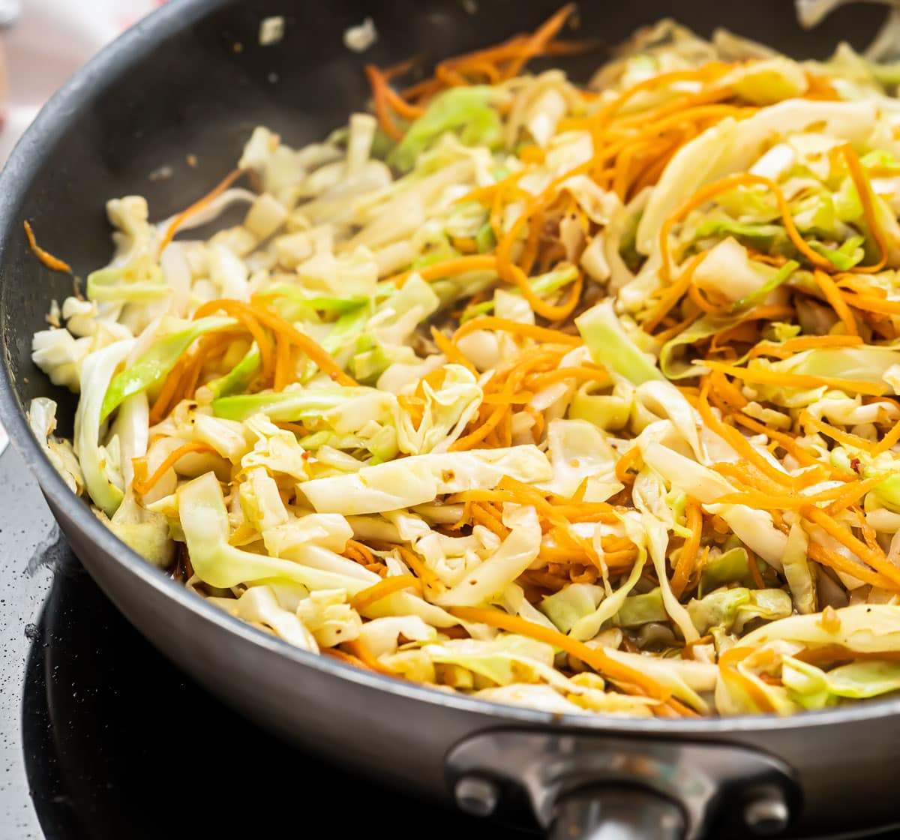

Veggie Stir Fry
Description
A delicious paleo friendly Vegetable stir fry with no meat needed!
Ingredients
- 4 cups organic cabbage
- 1 cup organic carrots sliced
- 1 tsp sesame oil
- 1 cup diced organic onion
- 1/4 cup coconut aminos
Steps
- Preheat large skillet or wok over medium-high heat.
- Add oil to coat the pan.
- Add the carrots and onions and cook for 5 minuntes.
- Add cabbage and coconut aminos. Stir to coat all veggies and cook until tender, about 5 minuntes
Home